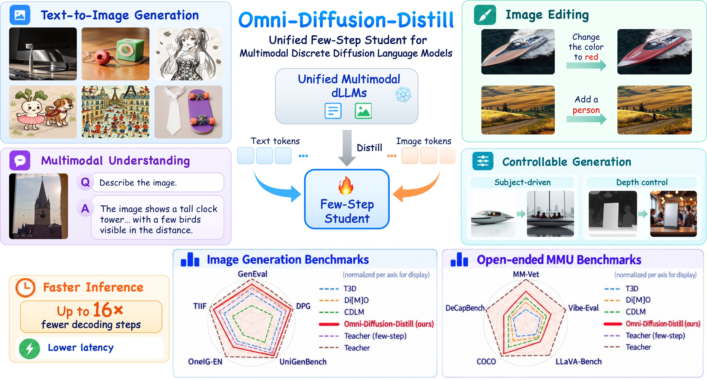
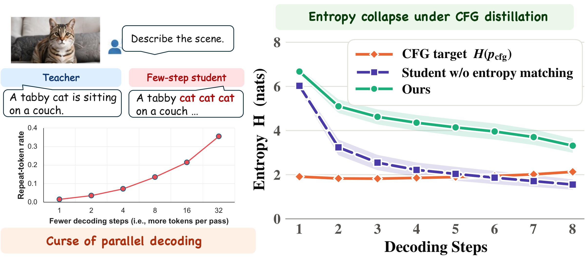
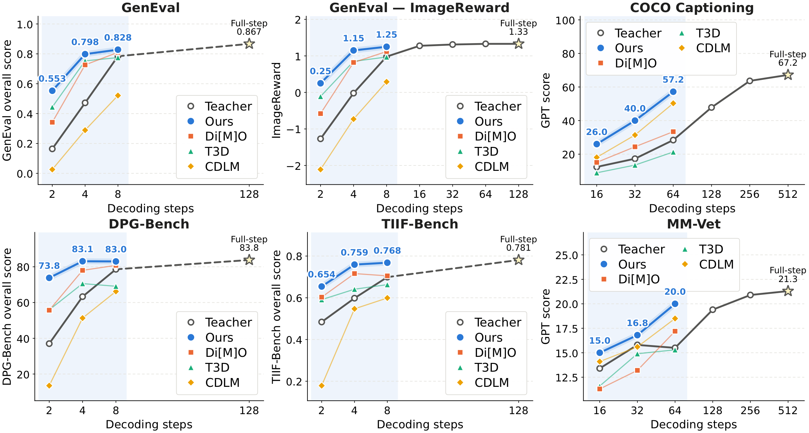
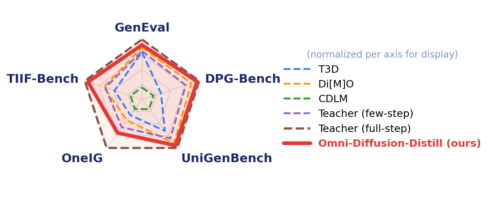
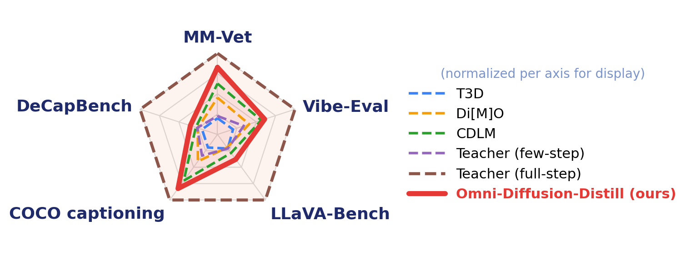
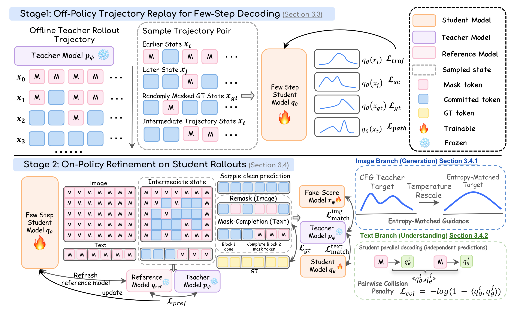

Off-policy trajectory replay
The student learns to skip decoding steps by matching teacher predictions cached along offline trajectories, with no teacher forward pass during training.
Unified multimodal dLLM · few-step distillation
Few-Step Distillation of Unified Multimodal Diffusion Large Language Models
TL;DR One few-step student for every task of a unified discrete diffusion LLM. It generates an image in 8 steps instead of 128 and answers a question in 64 steps instead of 512, while staying close to the full-step teacher.

Cutting decoding steps fails differently in each modality. Text tokens committed in the same step cannot see each other, so the output starts repeating. Images must absorb classifier-free guidance, and fitting the sharpened guided target collapses the student's entropy.

Each square is one output token. The teacher commits a few tokens per step and runs extra guidance passes; the student commits many at once without guidance. Timing below is scaled from measured A100 latency.
Understanding decodes block by block with an exact KV cache, so its speedup exceeds the 8× step reduction.

All samples come from the same distilled model, at 8 steps for images and 64 steps for text.
Same prompt and seed for every method. Distilled models use 8 image steps or 64 text steps; the teacher uses its full budget of 128 or 512 steps.



The student learns to skip decoding steps by matching teacher predictions cached along offline trajectories, with no teacher forward pass during training.
The student is refined on states from its own rollouts, so it learns to recover from the errors it actually makes at inference.
Tokens committed in the same step cannot see each other. Penalizing the probability that two of them pick the same token cuts repetition loops from 74.4% to 7.7%.
Matching a guidance-sharpened target collapses the student's entropy. Rescaling the target to a fixed fraction of the conditional entropy keeps the student diverse and editable.